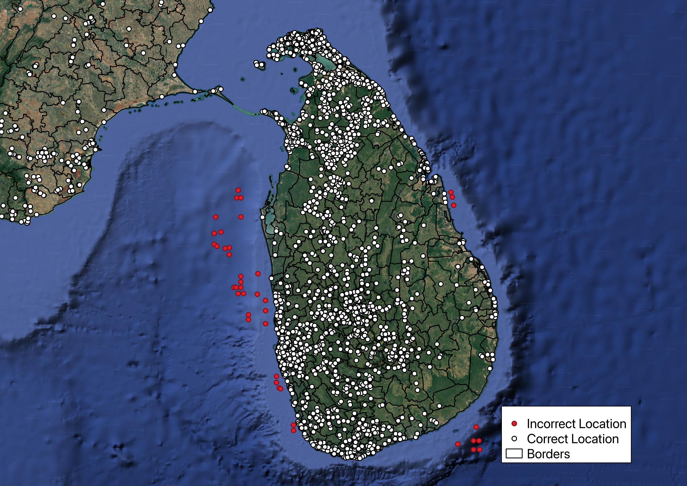

Data validation
Every file you upload is passed through an automated validation and standardisation pipeline before it is used in any analysis. The pipeline is category-aware: the checks applied to a point-of-interest file are not the same as those applied to a mobile coverage raster.
The pipeline applies corrections to rescue an imperfect file, for example by correcting accented or inconsistent column headings, alternative spellings of a technology or a non-WGS84 projection. However, a dataset only reaches the models once it contains at least one record that satisfies every mandatory requirement for its category.
Column and value harmonisation
Column names are normalised before any other check: converted to lower case, stripped of accents and punctuation, with spaces converted to underscores (Latitud Geográfica → latitud_geografica). A dictionary of known aliases is then applied, so common exports work without manual editing. For example latitude, latitud → lat; antenna_height_m → antenna_height; internet_availability → is_connected.
Values in controlled-vocabulary fields are mapped onto the levels documented in Input Datasets. For example, LTE → 4G and NR → 5G for radio_type, FTTx → fiber for connectivity_type, and Yes/No/1/0 → True/False for the boolean fields.
Schema enforcement
- Any mandatory or optional column that is absent is created and populated with nulls, so that downstream models always receive a consistent schema.
- Additional columns you supply are preserved, not discarded, and travel through to the outputs.
- A
dataset_idis generated for the upload, and a unique identifier (poi_idfor points of interest,ict_idfor cell sites and transmission nodes) is generated for every record. country_codeis set to the ISO 3166-1 alpha-3 code of the country selected for the analysis.- For points of interest, any column that holds results from a previous CPP analysis (distances to infrastructure, coverage flags, cost and revenue fields, fibre path variables, and around 70 others) is stripped out. This means you can safely re-upload a CPP output file as an input without stale results contaminating the new analysis.
Geospatial validation
This is the most extensive part of the pipeline, and it applies to every category.
| Check | Behaviour |
|---|---|
| Coordinate reference system | A file with no declared CRS is assumed to be WGS84 (EPSG:4326). A file in any other CRS is reprojected to WGS84 automatically. |
| Geometry validity | Every geometry is tested for being null, empty or topologically invalid (e.g. self-intersecting polygons). Invalid geometries are flagged and set to null rather than being allowed into the analysis. |
| Geometry from text | CSV and Excel files are scanned for a geometry, wkt, geom_wkt, geometry_wkt or as_wkt column and parsed into real geometry, so coverage polygons can be supplied as text. |
| Coordinate extraction | For point categories supplied as vector files, lat/lon are derived from the geometry: directly for POINT, and from the centroid for MULTIPOINT. |
| Coordinate plausibility | lat and lon are coerced to numbers; anything that is not numeric, or that falls outside the valid range of −90 to 90 and −180 to 180, is treated as missing. Records still missing coordinates are removed. |
| Country boundary check | The country's administrative boundary is retrieved from a world boundaries reference dataset, buffered in a locally estimated UTM projection, and every point is spatially joined against it. Points falling outside are removed. |
| Deduplication | Exact geographic duplicates are removed, by coordinates for points of interest and transmission nodes, and by coordinates and radio_type for cell sites. This means a co-located 4G and 5G site is correctly kept as two records. |
Coordinate errors are rarely obvious in a spreadsheet, but they are unmistakable on a map. Swapped, truncated or mistyped coordinates typically land in the sea:

Points in red fall outside the buffered national boundary and are removed; points in white are kept.
Mobile coverage rasters are validated separately: the file must open as a valid raster, contain exactly one band, declare a coordinate reference system, and have positive width and height. A radio_type must also be selected in the interface. A raster without one is rejected, because the coverage layer could not otherwise be attributed to a technology.
Gap filling and imputation
Where a non-essential value is missing, the platform fills it using a documented rule rather than dropping the record.
Points of interest
| Field | Rule |
|---|---|
is_connected, connectivity_type |
If both are absent, connectivity is inferred by spatially joining each point against Ookla Open Data performance tiles. A point intersecting a fixed tile is classified as fixed, then as fiber or adsl depending on whether the measured average download speed reaches 100 Mbps. A point intersecting only a mobile tile is classified as mobile, and a point intersecting neither as not connected. The test is all-or-nothing: if either column contains any data, the inference is skipped for the whole dataset and the remaining nulls are left as they are. |
has_electricity |
Assumed False if not supplied. |
number_of_users |
Estimated from population data in the demand analysis. |
total_mbps |
Estimated from the number of users and the assumed bandwidth demand per user. |
Cell sites
| Field | Rule |
|---|---|
antenna_height |
Values above 1,000 m are treated as data-entry errors and discarded. If your file contains no usable heights at all (the column is absent, empty or entirely non-numeric), every site is assigned the default of 25 m. If it contains some valid heights, the missing ones are filled with the median of the valid heights in your own file rather than the default. |
radio_type |
Values outside 2G/3G/4G/5G are set to unknown rather than guessed. Records with no radio_type at all are removed. |
Transmission nodes
| Field | Rule |
|---|---|
transmission_medium |
Values that are missing, or outside coaxial, copper, microwave and fiber, are set to unknown. |
Mobile coverage
| Field | Rule |
|---|---|
radio_type |
Values outside 2G/3G/4G/5G are treated as missing, and the record is removed, since coverage cannot be modelled without a technology. For rasters, the radio_type chosen in the interface is applied to the whole layer. |